| [ Team LiB ] |
|
5.4 PID Controller AlgorithmsHere we continue to work in deviation variable form. Recall that a proportional-only controller could lead to offset between the desired setpoint and the actual output. This happened because the controller output (process input) and process output came to new equilibrium values before the error went to zero. The next step is to add a term where the controller output is proportional to the integral of the error, in addition to the term that is proportional to the error. This is known as proportional-integral (PI) control. As long as there continues to be an error signal to the controller, the controller output (process input) will continue to change. Therefore, the integral of the error forces the error signal to zero. Notice that this type of controller implicitly accounts for the past system response. A proportional-only controller does not account for this "process history." PI ControlA PI controller has two terms (and two tuning parameters), one proportional to the error (kc) and the other proportional to the integral of the error (kI). 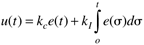 This is more commonly written in the form 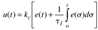 where tI is known as the integral time. Both the proportional gain and integral time are tuning parameters that can be adjusted by the control instrument technician or process operator. Notice that kI = kc/tI. The transform of an integral is 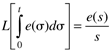 Taking the Laplace transform of Equation (5.7), we find as representation for a PI controller 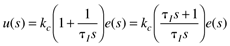 and the controller transfer function for PI control is 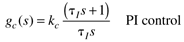 The following example is an application of PI control to a first-order process. Example 5.2: First-Order Process with a PI ControllerA first-order process with a PI controller has the closed-loop transfer function 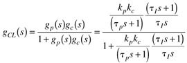 which can be rearranged to the form 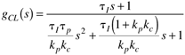 Notice that there is no offset, because the closed-loop gain is 1. The quadratic formula can be used to show that for a second-order characteristic polynomial, if all the coefficients are positive, the roots are negative (stable). In this case, we have the conditions 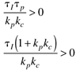 Assuming that the process is open-loop stable (tp > 0) and realizing that tI > 0 by definition, we see that from the first condition, 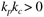 that is, kp and kc must be the same sign. The second condition requires that 1 + kpkc > 0, or 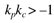 which is less restrictive than the first condition. The first condition, kpkc > 0, then must be met for closed-loop stability of this system. We must realize that there are two controller tuning parameters, kc and tI, that can be adjusted to give a desired closed-loop response. The process parameters are not available for adjustment, since they are physical parameters based on the process under consideration. We have already found the conditions for stability but have not discussed the expected dynamic behavior of a stable closed-loop system. If some poles of the closed-loop system are complex, the response will consist of damped oscillations (underdamped), and if all the poles are real, the response will be critically damped or overdamped. The reader has the opportunity (see Exercise 16) to show that the closed-loop behavior will be underdamped if the following condition is satisfied 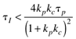 The reader should also show that if the integral time, tI, is equal to the process time constant, tp, the closed-loop response will be first order with a closed-loop time constant of tp/(kpkc). These results can be illustrated by simulation for a first-order process with the following parameter values (see Example 5.1) 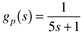 Simulations for a setpoint change of 1°C are shown in Figure 5-14, for tI = 0.25 minutes and tI = 5 minutes. In both cases the proportional gain is kc = 5 kW/°C. For the smaller integral time there is oscillatory performance in both the controlled output (temperature) and manipulated input (heater power). This oscillatory performance is often viewed as unfavorable to process operators. An oscillatory closed-loop system is usually more sensitive to parameter uncertainty; that is, if the process operating conditions changed the closed-loop system could go unstable. Figure 5-14. Closed-loop response of a first-order system under PI-control. Effect of integral time on offset and speed of response. The proportional gain, kc, is 5 kW/°C in both cases.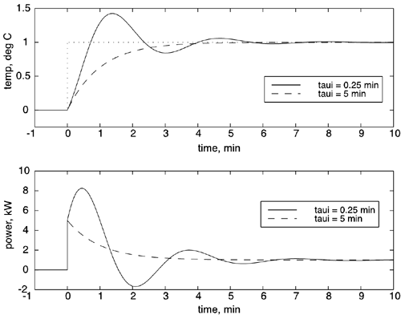 In Example 5.2, a first-order process with PI control, we showed that the controller gain and the process gain must be the same sign for closed-loop stability. This result holds true for any open-loop stable process with integral control. Just remember that the requirement kpkc > 0 is necessary and sufficient for stability of PI control of a first-order system only, because the closed-loop transfer function is second-order and positive coefficients for the second-order transfer function are necessary and sufficient for stability. For higher order, open-loop stable systems, kpkc > 0 is necessary for closed-loop stability but not sufficient. The Routh array (Section 5.5) must be checked for the sufficient conditions. PID ControlThe next level of controller complexity is to add a term that accounts for the current rate of change (derivative) of the error. Using knowledge of the derivative of the error allows the controller to "predict" where the future error is heading and compensate for it. The time-domain representation of PID control is 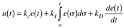 which is often written (kD = kctD) 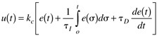 where tD is called the derivative time. In the Laplace domain, Equation (5.11) is written 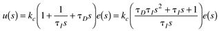 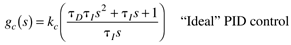 It turns out that the "ideal" PID algorithm is not physically realizable, that is, no instrument can take a perfect derivative, so most "practical" PID algorithms have one of the following forms 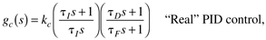 or 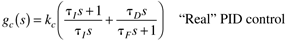 where tF + atD. A typical value for a is 0.1 or less. Even if the ideal PID controller of Equation (5.13) could be implemented, it would not be desirable. A step setpoint change, for example, would cause the derivative of the error to be infinity and cause a spike in the manipulated variable; this behavior is known as derivative "kick." For this reason the derivative action is often based on the process output rather than the error. That is, Equation (5.11) is implemented as 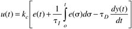 The transfer function representation is 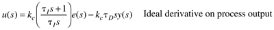 Again, since an ideal derivative cannot be implemented, the following filtered derivative of the output can be used 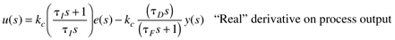 Proportional BandWe have been using a controller formulation based on proportional gain. Some industrial controllers use proportional band, rather than proportional gain. The proportional band is the range of error that causes the controller output (manipulated input) to change over its full range. The proportional band is related to the proportional gain by 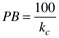 as shown in Module 15. |
| [ Team LiB ] |
|